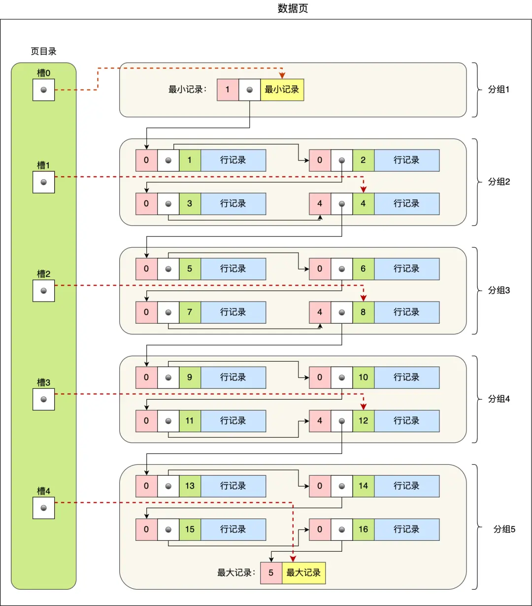
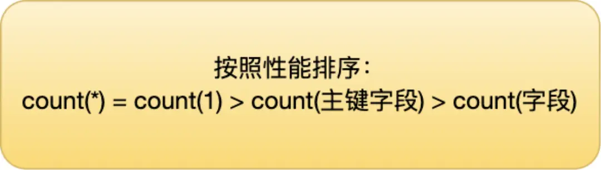

mysql-索引
索引帮助存储引擎快速获取数据的一种数据结构，形象的说就是索引是数据的目录。
索引的定义
帮助存储引擎快速获取数据的一种数据结构，形象的说就是索引是数据的目录。
索引分类
- 数据结构：B+tree索引、hash索引、Full-text索引
- 物理存储：聚簇索引（主键索引）、非聚簇索引（二级索引、辅助索引）
- 字段特性：主键索引、唯一索引、普通索引、前缀索引
- 字段个数：单列索引、联合索引
InnoDB存储引擎索引选择
- 默认使用主键作为聚簇索引的索引建；
- 没有主键使用第一个不包含NULL值得唯一列作为聚簇索引的索引键；
- 都没有情况下，默认生成隐式自助id列作为聚簇索引的索引建；
B+tree索引
B+tree索引结构（图中叶子节点需改为双向列表）

- 多叉树，叶子节点才存放数据，非叶子节点只存放索引，每个节点里的数据是按主键顺序存放的。
- 叶子节点中包括了所有的索引值信息，有两个指针，分别指向下一个叶子节点和上一个叶子节点，双向链表。
- 主键索引的 B+Tree 的叶子节点存放的是实际数据，二级索引的 B+Tree 的叶子节点存放的是主键值。
- 在二级索引的 B+Tree 就能查询到结果的过程就叫作「覆盖索引」，也就是只需要查一个 B+Tree 就能找到数据。
为什么 MySQL InnoDB 选择 B+tree 作为索引的数据结构？
B+Tree vs B Tree
B+Tree 只在叶子节点存储数据，而 B 树 的非叶子节点也要存储数据，所以 B+Tree 的单个节点的数据量更小，在相同的磁盘 I/O 次数下，就能查询更多的节点。另外，B+Tree 叶子节点采用的是双链表连接，适合 MySQL 中常见的基于范围的顺序查找，而 B 树无法做到这一点。B树则需要通过中序遍历才能完成查询范围的查找。
B+Tree vs 二叉树
对于有 N 个叶子节点的 B+Tree，其搜索复杂度为O(logdN)，其中 d 表示节点允许的最大子节点个数为 d 个。在实际的应用当中， d 值是大于100的，这样就保证了即使数据达到千万级别时，B+Tree 的高度依然维持在 3
4 层左右，也就是说一次数据查询操作只需要做 34 次的磁盘 I/O 操作就能查询到目标数据。而二叉树的每个父节点的儿子节点个数只能是 2 个，意味着其搜索复杂度为 O(logN)，这已经比 B+Tree 高出不少，因此二叉树检索到目标数据所经历的磁盘 I/O 次数要更多。
B+Tree vs Hash
Hash 在做等值查询的时候效率贼快，搜索复杂度为 O(1)。但是 Hash 表不适合做范围查询，它更适合做等值的查询，这也是 B+Tree 索引要比 Hash 表索引有着更广泛的适用场景的原因。
联合索引的最左匹配原则
按照最左优先的方式进行索引的匹配
在遇到范围查询（如 >、<）的时候，就会停止匹配，也就是范围查询的字段可以用到联合索引，但是在范围查询字段的后面的字段无法用到联合索引。注意，对于 >=、<=、BETWEEN、like 前缀匹配的范围查询，并不会停止匹配。
1. a > 1 and b > 2，从 a > 1 开始扫描
2. a >= 1 and b = 2，从 a = 1 and b = 2 开始扫描
3. a between 2 and 8 and b = 2，从 a = 2 and b = 2 开始扫描
4. name like ‘j%’ and age = 22，从 name = ‘j’ and age = 22 开始扫描索引下推
而 MySQL 5.6 引入的索引下推优化（index condition pushdown)， 可以在联合索引遍历过程中，对联合索引中包含的字段先做判断，直接过滤掉不满足条件的记录，减少回表次数。索引是否需要创建
- 需要
- 字段有唯一性限制
- 经常用于where/group/order by的字段
- 不需要
- 区分度底，某个值出现率超过30%优化器会忽略索引使用全表扫描
- 不经常用于where/group/order by的字段
- 表数据太少
- 经常更新的字段
- 需要
索引优化
- 前缀索引优化，减少索引字段大小，增加索引页中存储的索引值
- 覆盖索引优化，查询的字段在二级索引的叶子节点都能找到，减少回表操作
- 主键索引最好是自增的，插入是追加操作，不需要重新移动数据。否则需要移动数据，会造成页分裂，还会造成大量内存碎片
- 索引最好设置NOT NULL，统计复杂且占用物理空间
索引失效情况
- 左或者左右模糊匹配的时候，也就是 like %xx 或者 like %xx%这两种方式都会造成索引失效；(例外情况，查询的字段在二级索引叶子节点（主键+二级索引字段）都能找到，直接全扫描二级索引树)
- 查询条件中对索引列做了计算、函数、类型转换操作；
- 联合索引要能正确使用需要遵循最左匹配原则，也就是按照最左优先的方式进行索引的匹配，否则就会导致索引失效；
- 在 WHERE 子句中，如果在 OR 前的条件列是索引列，而在 OR 后的条件列不是索引列，那么索引会失效。
explain 查看查询计划
explain 结果结构

参数说明
a. possible_keys 字段表示可能用到的索引；
b. key 字段表示实际用的索引，如果这一项为 NULL，说明没有使用索引；
c. key_len 表示索引的长度；
d. rows 表示扫描的数据行数。
e. type 表示数据扫描类型，我们需要重点看这个。
f. extra 额外说明type 字段参数说明
a. All（全表扫描）；
b. index（全索引扫描）；
c. range（索引范围扫描）；
d. ref（非唯一索引扫描）；
e. eq_ref（唯一索引扫描）；eq_ref 通常用于多表联查中；
f. const（结果只有一条的主键或唯一索引扫描）。const 是与常量进行比较，查询效率会更快；
数据页角度看B+树
InnDB 如何存储数据
- InnoDB 的数据是按「数据页」为单位来读写的
- InnoDB 数据页的默认大小是 16KB
- 数据页中的记录按照「主键」顺序组成单向链表，单向链表的特点就是插入、删除非常方便，但是检索效率不高，最差的情况下需要遍历链表上的所有节点才能完成检索
- 因此，数据页中有一个页目录，起到记录的索引作用
- 页目录就是由多个槽组成的
槽相当于分组记录的索引，即每组最后一条记录的地址偏移量。我们通过槽查找记录时，可以使用二分法快速定位要查询的记录在哪个槽（哪个记录分组），定位到槽后，再遍历槽内的所有记录，找到对应的记录 - 槽内的记录数量规定
- 第一个分组中的记录只能有 1 条记录；
- 最后一个分组中的记录条数范围只能在 1-8 条之间；
- 剩下的分组中记录条数范围只能在 4-8 条之间。
B+树如何查询数据

磁盘的 I/O 操作次数对索引的使用效率至关重要，“矮胖”的B+树数据结构所需要进行的磁盘 I/O 次数更少，而且 B+ 树更适合进行关键字的范围查询。
B+树特点
- 只有叶子节点（最底层的节点）才存放了数据，非叶子节点（其他上层节）仅用来存放目录项作为索引。
- 非叶子节点分为不同层次，通过分层来降低每一层的搜索量；
- 所有节点按照索引键大小排序，构成一个双向链表，便于范围查询；
聚簇索引和二级索引
因为表的数据都是存放在聚簇索引的叶子节点里，所以 InnoDB 存储引擎一定会为表创建一个聚簇索引，且由于数据在物理上只会保存一份，所以聚簇索引只能有一个。如果某个查询语句使用了二级索引，但是查询的数据不是主键值，这时在二级索引找到主键值后，需要去聚簇索引中获得数据行，这个过程就叫作「回表」，也就是说要查两个 B+ 树才能查到数据。不过，当查询的数据是主键值时，因为只在二级索引就能查询到，不用再去聚簇索引查，这个过程就叫作「索引覆盖」，也就是只需要查一个 B+ 树就能找到数据。
为什么 MySQL 采用 B+ 树作为索引？
不单单要从数据结构的角度出发，还要考虑磁盘 I/O 操作次数，因为 MySQL 的数据是存储在磁盘中的嘛。
由于数据库的索引是保存到磁盘上的，因此当我们通过索引查找某行数据的时候，就需要先从磁盘读取索引到内存，再通过索引从磁盘中找到某行数据，然后读入到内存，也就是说查询过程中会发生多次磁盘 I/O，而磁盘 I/O 次数越多，所消耗的时间也就越大。
怎样的索引数据结构是好的
MySQL 的数据是持久化的，意味着数据（索引+记录）是保存到磁盘上的，因为这样即使设备断电了，数据也不会丢失。磁盘读写的最小单位是扇区，扇区的大小只有 512B 大小，操作系统一次会读写多个扇区，所以操作系统的最小读写单位是块（Block）。Linux 中的块大小为 4KB，也就是一次磁盘 I/O 操作会直接读写 8 个扇区。
由于数据库的索引是保存到磁盘上的，因此当我们通过索引查找某行数据的时候，就需要先从磁盘读取索引到内存，再通过索引从磁盘中找到某行数据，然后读入到内存，也就是说查询过程中会发生多次磁盘 I/O，而磁盘 I/O 次数越多，所消耗的时间也就越大。
所以，要设计一个适合 MySQL 索引的数据结构，至少满足以下要求：
1. 能在尽可能少的磁盘的 I/O 操作中完成查询工作； 2. 要能高效地查询某一个记录，也要能高效地执行范围查找；B+ 作为索引的数据结构原因
- B+ 树的非叶子节点不存放实际的记录数据，仅存放索引，因此数据量相同的情况下，相比存储即存索引又存记录的 B 树，B+树的非叶子节点可以存放更多的索引，因此 B+ 树可以比 B 树更「矮胖」，查询底层节点的磁盘 I/O次数会更少。
- B+ 树有大量的冗余节点（所有非叶子节点都是冗余索引），这些冗余索引让 B+ 树在插入、删除的效率都更高，比如删除根节点的时候，不会像 B 树那样会发生复杂的树的变化；
- B+ 树叶子节点之间用链表连接了起来，有利于范围查询，而 B 树要实现范围查询，因此只能通过树的遍历来完成范围查询，这会涉及多个节点的磁盘 I/O 操作，范围查询效率不如 B+ 树。
MySQL 单表不要超过 2000W 行？
假设
非叶子节点内指向其他页的数量为 x
索引页记录 x = (16KB - 1KB) * 1024KB / (8B + 4B) ~ 1280 行
索引页记录 x = (页大小 - 页头、页号、目录等) * 1024 B / (索引行数据=索引 + 页号)叶子节点内能容纳的数据行数为 y
数据页记录 y = (16KB - 1KB) * 1KB / 1KB ~ 15
数据页记录 y = (页大小 - 页头、页号、目录等) * 1024 B / (行数据假设1KB)B+ 数的层数为 z
总记录数 = Total = x^(z-1) * y
假设 B+ 树是两层
z = 2， Total = （1280 ^1 ）* 15 = 19200假设 B+ 树是三层
z = 3， Total = （1280 ^2） * 15 = 24576000 （约 2.45kw）这正好就是文章开头说的最大行数建议值 2000W。对的，一般 B+ 数的层级最多也就是 3 层。
单行数据变多情况下，建议值减少
我们刚刚在说 Y 的值时候假设的是 1K ，那比如我实际当行的数据占用空间不是 1K , 而是 5K, 那么单个数据页最多只能放下 3 条数据。同样，还是按照 z = 3 的值来计算，那 Total = （1280 ^2） *3 = 4915200 （近 500w）
所以，在保持相同的层级（相似查询性能）的情况下，在行数据大小不同的情况下，其实这个最大建议值也是不同的，而且影响查询性能的还有很多其他因素，比如，数据库版本，服务器配置，sql 的编写等等。
MySQL 为了提高性能，会将表的索引装载到内存中，在 InnoDB buffer size 足够的情况下，其能完成全加载进内存，查询不会有问题。
但是，当单表数据库到达某个量级的上限时，导致内存无法存储其索引，使得之后的 SQL 查询会产生磁盘 IO，从而导致性能下降，所以增加硬件配置（比如把内存当磁盘使），可能会带来立竿见影的性能提升哈。
总结
- MySQL 的表数据是以页的形式存放的，页在磁盘中不一定是连续的。
- 页的空间是 16K, 并不是所有的空间都是用来存放数据的，会有一些固定的信息，如，页头，页尾，页码，校验码等等。
- 在 B+ 树中，叶子节点和非叶子节点的数据结构是一样的，区别在于，叶子节点存放的是实际的行数据，而非叶子节点存放的是主键和页号。
- 索引结构不会影响单表最大行数，2000W 也只是推荐值，超过了这个值可能会导致 B + 树层级更高，影响查询性能。更多的与单记录数据大小有关，数据越大，页节点越多，整个树层级就会越高。
索引失效情况
对索引使用左或者左右模糊匹配
使用左或者左右模糊匹配的时候，也就是 like %xx 或者 like %xx% 都会造成索引失效。因为索引 B+ 树是按照「索引值」有序排列存储的，只能根据前缀进行比较。
对索引使用函数
如果查询条件中对索引字段使用函数，就会导致索引失效。因为索引保存的是索引字段的原始值，而不是经过函数计算后的值，自然就没办法走索引了。
从 MySQL 8.0 开始，索引特性增加了函数索引
对索引进行表达式计算
失效： where id + 1 = 10;
不失效：where id = 10 - 1;对索引隐式类型转换
失效： phone = 1300000001; where CAST(phone AS signed int) = 1300000001;
不失效： id = ‘1’; where id = CAST(“1” AS signed int);通过 select “10” > 9 的结果来知道MySQL 的数据类型转换规则是什么：
自动「字符串」转换成「数字」，就相当于 select 10 > 9，这个就是数字比较，所以结果应该是 1；
自动「数字」转换成「字符串」，就相当于 select “10” > “9”，所以结果应该是 0。
说明 MySQL 在遇到字符串和数字比较的时候，会自动把字符串转为数字，然后再进行比较。
联合索引非最左匹配
创建了一个 (a, b, c) 联合索引有效（顺序无关，优化器调整）
- where a=1；
- where a=1 and b=2 and c=3；
- where a=1 and b=2；
无效
- where b=2；
- where c=3；
- where b=2 and c=3；
截断
where a = 1 and c = 3只使用前面 a 会走索引
mysql5.5在联合索引找到主键值后，开始回表，到主键索引读取数据行，Server 层从存储引擎层获取到数据行后，然后在 Server 层再比对 c 字段的值。
从 MySQL 5.6 之后，有一个索引下推功能，可以在存储引擎层进行索引遍历过程中，对索引中包含的字段先做判断，直接过滤掉不满足条件的记录，再返还给 Server 层，从而减少回表次数。
为什么联合索引不遵循最左匹配原则就会失效？
原因是，在联合索引的情况下，数据是按照索引第一列排序，第一列数据相同时才会按照第二列排序。WHERE 子句中的 OR
在 WHERE 子句中，如果在 OR 前的条件列是索引列，而在 OR 后的条件列不是索引列，那么索引会失效。
MySQL 使用 like “%x“，索引一定会失效吗？
不一定，关键看数据表中的字段。如果数据库表中的字段只有主键+二级索引，那么即使使用了左模糊匹配，也不会走全表扫描（type=all），而是走全扫描二级索引树(type=index)。
只不过没利用索引树的有序性的特点，没有通过查询比较的方式，快速定位到了数据行。
count(*) 和 count(1) 有什么区别？哪个性能最好？
结论
count()是什么
统计符合查询条件的记录中，函数指定的参数不为 NULL 的记录有多少个。分析
表里只有主键索引
- count(字段)：遍历主键索引，判断字段 != NULL，count++
- count(主键字段): 遍历主键索引，判断主键字段 != NULL，count++
- count(1): 遍历主键索引, count++
- count(*) == count(0): 遍历主键索引, count++
表里有二级索引
- count(字段)：遍历主键索引，判断字段 != NULL，count++
- count(主键字段): 遍历二级索引，判断主键字段 != NULL，count++
- count(1): 遍历二级索引，count++
- count(*) == count(0): 遍历二级索引，count++
小结
所以，如果要执行 count(1)、 count(*)、 count(主键字段) 时，尽量在数据表上建立二级索引，这样优化器会自动采用 key_len 最小的二级索引进行扫描，相比于扫描主键索引效率会高一些。为什么要通过遍历的方式来计数？
使用 MyISAM 引擎时，执行 count 函数只需要 O(1 )复杂度，这是因为每张 MyISAM 的数据表都有一个 meta 信息有存储了row_count值，由表级锁保证一致性。
InnoDB 存储引擎是支持事务的，同一个时刻的多个查询，由于多版本并发控制（MVCC）的原因，InnoDB 表“应该返回多少行”也是不确定的，所以无法像 MyISAM一样，只维护一个 row_count 变量。
当带上 where 条件语句之后，MyISAM 跟 InnoDB 就没有区别了，它们都需要扫描表来进行记录个数的统计。
如何优化 count(*)？
如果对一张大表经常用 count(*) 来做统计，其实是很不好的。第一种，近似值
可以使用 show table status 或者 explain 命令来表进行估算。执行 explain 命令效率是很高的，因为它并不会真正的去查询，下图中的 rows 字段值就是 explain 命令对表 t_order 记录的估算值。第二种，额外表保存计数值
如果是想精确的获取表的记录总数，我们可以将这个计数值保存到单独的一张计数表中。当我们在数据表插入一条记录的同时，将计数表中的计数字段 + 1。也就是说，在新增和删除操作时，我们需要额外维护这个计数表。